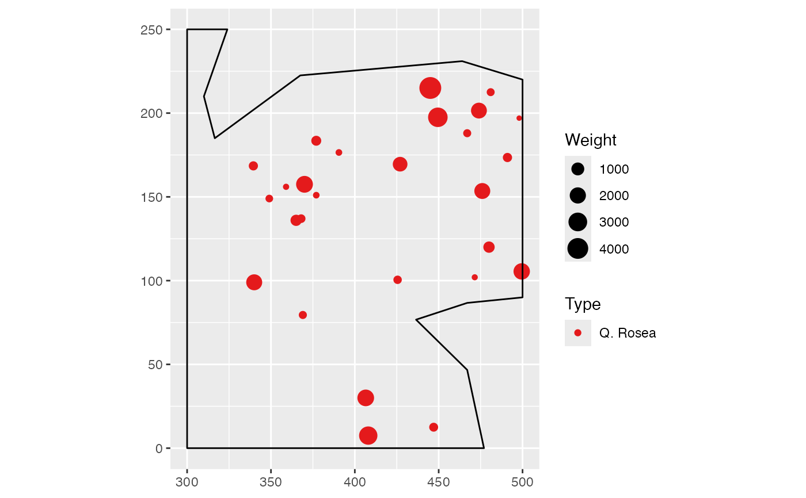
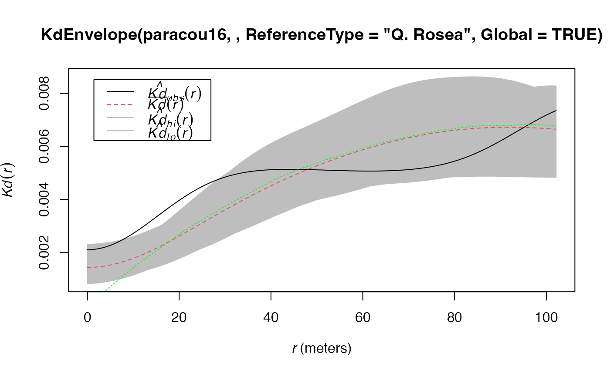

KdEnvelope.RdSimulates point patterns according to the null hypothesis and returns the envelope of Kd according to the confidence level.
KdEnvelope(X, r = NULL, NumberOfSimulations = 100, Alpha = 0.05, ReferenceType, NeighborType = ReferenceType, Weighted = FALSE, Original = TRUE, Approximate = ifelse(X$n < 10000, 0, 1), Adjust = 1, MaxRange = "ThirdW", StartFromMinR = FALSE, SimulationType = "RandomLocation", Global = FALSE)
| X | A point pattern ( |
|---|---|
| r | A vector of distances. If |
| NumberOfSimulations | The number of simulations to run, 100 by default. |
| Alpha | The risk level, 5% by default. |
| ReferenceType | One of the point types. |
| NeighborType | One of the point types. By default, the same as reference type. |
| Weighted | Logical; if |
| Original | Logical; if |
| Approximate | if not 0 (1 is a good choice), exact distances between pairs of points are rounded to 1024 times |
| Adjust | Force the automatically selected bandwidth (following Silverman, 1986) to be multiplied by |
| MaxRange | The maximum value of |
| StartFromMinR | Logical; if |
| SimulationType | A string describing the null hypothesis to simulate. The null hypothesis may be "RandomLocation": points are redistributed on the actual locations (default); "RandomLabeling": randomizes point types, keeping locations and weights unchanged; "PopulationIndependence": keeps reference points unchanged, randomizes other point locations. |
| Global | Logical; if |
This envelope is local by default, that is to say it is computed separately at each distance. See Loosmore and Ford (2006) for a discussion.
The global envelope is calculated by iteration: the simulations reaching one of the upper or lower values at any distance are eliminated at each step. The process is repeated until Alpha / Number of simulations simulations are dropped. The remaining upper and lower bounds at all distances constitute the global envelope. Interpolation is used if the exact ratio cannot be reached.
An envelope object (envelope). There are methods for print and plot for this class.
The fv contains the observed value of the function, its average simulated value and the confidence envelope.
Duranton, G. and Overman, H. G. (2005). Testing for Localisation Using Micro-Geographic Data. Review of Economic Studies 72(4): 1077-1106.
Kenkel, N. C. (1988). Pattern of Self-Thinning in Jack Pine: Testing the Random Mortality Hypothesis. Ecology 69(4): 1017-1024.
Loosmore, N. B. and Ford, E. D. (2006). Statistical inference using the G or K point pattern spatial statistics. Ecology 87(8): 1925-1931.
Marcon, E. and F. Puech (2017). A typology of distance-based measures of spatial concentration. Regional Science and Urban Economics. 62:56-67.
Scholl, T. and Brenner, T. (2015) Optimizing distance-based methods for large data sets, Journal of Geographical Systems 17(4): 333-351.
Silverman, B. W. (1986). Density estimation for statistics and data analysis. Chapman and Hall, London.
Eric Marcon <Eric.Marcon@ecofog.gf>
# Calculate confidence envelope plot(KdEnvelope(paracou16, , ReferenceType="Q. Rosea", Global=TRUE))#> Generating 100 simulations by evaluating expression ... #> 1, 2, 3, 4, 5, 6, 7, 8, 9, 10, 11, 12, 13, 14, 15, 16, 17, 18, 19, 20, 21, 22, 23, 24, 25, 26, 27, 28, 29, 30, 31, 32, 33, 34, 35, 36, 37, 38, 39, 40, #> 41, 42, 43, 44, 45, 46, 47, 48, 49, 50, 51, 52, 53, 54, 55, 56, 57, 58, 59, 60, 61, 62, 63, 64, 65, 66, 67, 68, 69, 70, 71, 72, 73, 74, 75, 76, 77, 78, 79, 80, #> 81, 82, 83, 84, 85, 86, 87, 88, 89, 90, 91, 92, 93, 94, 95, 96, 97, 98, 99, 100. #> #> Done.# Center of the confidence interval Kdhat(paracou16, ReferenceType="") -> kd lines(kd$Kd ~ kd$r, lty=3, col="green")